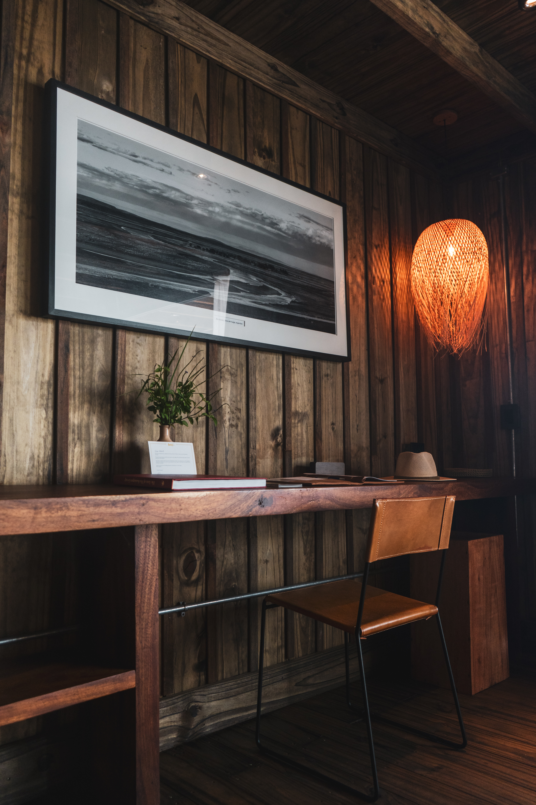

Volver a proyectos
Argentina
Tobar Lodge
Arquitectura de baja huella para estancias temporarias, enfocada en confort pasivo y una fuerte continuidad interior-exterior.
El proyecto propone una secuencia de pabellones conectados por galerías que filtran radiación y lluvia, permitiendo habitar el borde natural durante todo el año.
La materialidad contempla madera tratada y cerramientos livianos de alto desempeño, con una estrategia energética de demanda reducida y operación simple.